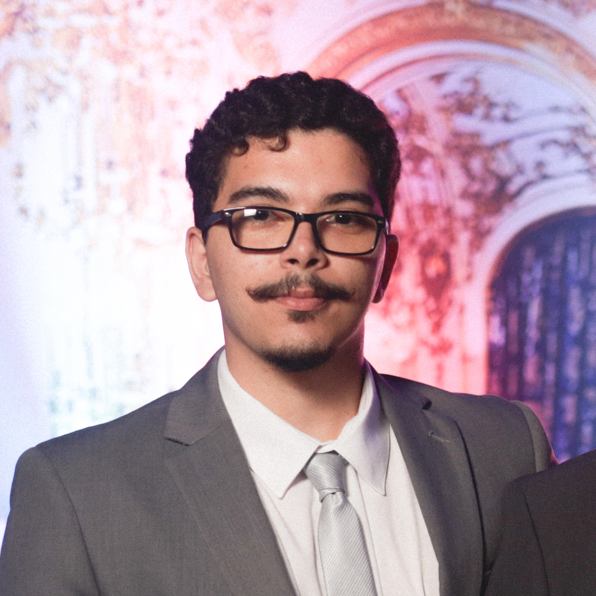

Danilo
Adryel
Engenheiro Eletrônico, em formação, com expertise em diagnósticos automotivos, infotainment, sistemas embarcados C/C++, protocolos CAN/LIN e análise avançada de falhas em sistemas pós-produção.

Quem sou eu
Sou Engenheiro Eletrônico em formação com forte experiência prática em desenvolvimento de software embarcado em C/C++, focado em engenharia automotiva — integrando software, hardware e qualidade para entregar sistemas de alto impacto e criticamente seguros.
Minha expertise concentra-se em ECUs, infotainment e conectividade veicular, integração hardware-software, protocolos CAN e LIN, diagnósticos avançados, validação e teste de software e análise de falhas em ambientes pós-produção.
Atualmente atuo na Stellantis como Serial Life Software Quality Analyst, realizando análises avançadas de falha em sistemas de infotainment automotivos, incluindo reflash de módulos, processos de atualização FOTA/AOTA/MOTA e validação de patches em concessionárias.
Bacharelado em Engenharia Eletrônica
Universidade Federal de Pernambuco (UFPE)
Jun 2022 – Jun 2028
Aceleração de Carreiras — Engenharia de Qualidade de Software
CESAR School
Out 2025 – Dez 2025
Ensino Médio Profissionalizante — Técnico em Meio Ambiente
IFPE — Instituto Federal de Pernambuco
Jan 2018 – Jan 2022
Experiência
- Membro da SWAT (Swift Action Team) de diagnósticos e suporte técnico de Infotainment, realizando testes avançados em bancada e veículo para identificar modos de falha e conduzir análise de causa raiz em sistemas pós-produção. Troubleshooting de problemas de hardware, software e comunicação CAN/LIN usando ferramentas como CANalyzer, CANcase, CANdela, DIAglyser, DIAnalyser e CDA.
- Interface Técnica e Gestão de Problemas: Interface técnica com fornecedores globais, suportando a Qualidade de Produto em sistemas de Infotainment (módulos, rádios, speakers, antenas e amplificadores). Análise de dados QFS, priorização de issues críticos e definição de planos de ação corretivos com equipes cross-funcionais (Engenharia, Qualidade de Fornecedores, Pós-Venda e Manufatura), aplicando metodologias de RCA (5 Porquês, Ishikawa, FTA) para garantir contenção, ações corretivas permanentes e prevenção de recorrência.
- Diagnósticos e Validação de Sistemas: Diagnósticos de primeiro nível em componentes retornados por garantia e veículos de campo, incluindo reflash de módulos, validação de software (FOTA, AOTA, MOTA) e análise de logs para identificar falhas sistêmicas. Desenvolvimento e execução de casos de teste para sistemas de infotainment, clusters digitais (IPC), serviços conectados e interfaces de comunicação veicular, aplicando metodologias de teste de integração e regressão.
- Análise de Garantia e Melhoria Contínua: Análise de peças de garantia (3/12 meses) e dados do PRC (Parts Return Center), gerenciando reclamações de clientes via QFS para garantir resoluções efetivas e tecnicamente fundamentadas. Identificação de padrões recorrentes de falha, geração de relatórios técnicos e condução de melhorias de software e hardware para aumentar o yield de manufatura e reduzir defeitos.
- Escopo Técnico (EECI): Rádios, displays, clusters de instrumentos (IPC), antenas, portas USB, carregadores sem fio, speakers, TBM, serviços conectados e sistemas elétricos e eletrônicos embarcados.
- Membro da SWAT (Swift Action Team) de diagnósticos e suporte técnico de Infotainment, realizando testes avançados em bancada e veículo para identificar modos de falha e conduzir análise de causa raiz em sistemas pós-produção. Troubleshooting de problemas de hardware, software e comunicação CAN/LIN usando ferramentas como CANalyzer, CANcase, CANdela, DIAglyser, DIAnalyser e CDA.
- Interface Técnica e Gestão de Problemas: Interface técnica com fornecedores globais, suportando a Qualidade de Produto em sistemas de Infotainment (módulos, rádios, speakers, antenas e amplificadores). Análise de dados QFS, priorização de issues críticos e definição de planos de ação corretivos com equipes cross-funcionais (Engenharia, Qualidade de Fornecedores, Pós-Venda e Manufatura), aplicando metodologias RCA (5 Porquês, Ishikawa, FTA) para contenção, ações corretivas permanentes e prevenção de recorrência.
- Diagnósticos e Validação de Sistemas: Diagnósticos de primeiro nível em componentes retornados por garantia e veículos de campo, incluindo reflash de módulos, validação de software (FOTA, AOTA, MOTA) e análise de logs para identificar falhas sistêmicas. Desenvolvimento e execução de casos de teste para sistemas de infotainment, clusters digitais (IPC), serviços conectados e interfaces de comunicação veicular, aplicando testes de integração e regressão.
- Análise de Garantia e Melhoria Contínua: Análise de peças de garantia (3/12 meses) e dados do PRC, gerenciando reclamações de clientes via QFS. Identificação de padrões recorrentes de falha, geração de relatórios técnicos e condução de melhorias de software e hardware para aumentar o yield de manufatura e reduzir defeitos.
- Escopo Técnico (EECI): Rádios, displays, clusters de instrumentos (IPC), antenas, portas USB, carregadores sem fio, speakers, TBM, serviços conectados e sistemas elétricos e eletrônicos embarcados.
- Governança de Dados, Confiabilidade & Qualidade de Manutenção: Atuação em rotinas de governança de dados e confiabilidade, realizando validação, controle e auditoria de consistência e completude de dados nos sistemas SPW (SFM, SPS). Garantia da integridade dos dados e confiabilidade de KPIs para análise de performance, manutenção preditiva e tomada de decisão orientada a dados.
- Gestão de Manutenção & Padronização de KPIs: Contribuição para a implementação e melhoria contínua de ferramentas de Gestão Visual de Manutenção, padronizando KPIs estratégicos como MTTR, MTBF, Disponibilidade e Custo de Manutenção, habilitando monitoramento em tempo real, rastreabilidade e análise de performance operacional.
- Dashboards Power BI & Integração de Dados: Colaboração no desenvolvimento e otimização de dashboards em Power BI, integrando dados do SAP PM, Excel e bases de dados locais usando processos ETL, Power Query e DAX. Entrega de métricas consolidadas, indicadores visuais e visões analíticas para suporte a análise de falhas, monitoramento de tendências e confiabilidade de manutenção.
- Relatórios Técnicos & Executivos: Suporte à preparação de relatórios técnicos e executivos por meio de análise de séries temporais, comparações históricas e indicadores estratégicos de performance, fornecendo insights acionáveis para equipes de engenharia, manutenção e gestão de ativos.
- Análise de Falhas & Melhoria Contínua: Apoio à aplicação de metodologias estruturadas de análise de falha (5 Porquês, RCA, Ishikawa, FTA) para identificar causas raiz, priorizar falhas críticas e definir planos de ação corretivos e preventivos.
- Monitoramento de Emergency Work Orders (EWO): Suporte ao monitoramento e análise de EWOs, mantendo e atualizando dashboards Power BI, identificando padrões recorrentes, rastreando eventos críticos e suportando ações corretivas de manutenção rápidas.
- Suporte ao Planejamento de Manutenção: Suporte ao desenvolvimento, estruturação e otimização de planos de manutenção preventiva e corretiva, contribuindo para o agendamento eficiente de atividades alinhado às metas de confiabilidade e disponibilidade de equipamentos.
- Controle e Monitoramento de Ordens de Trabalho (SAP PM): Participação na criação, atualização e rastreamento de ordens de trabalho no sistema SAP PM, assegurando fluxo de trabalho correto, cumprimento de prazos e execução de acordo com os planos de manutenção aprovados.
- Gestão de Cronograma e Recursos: Apoio ao monitoramento de cronogramas de manutenção, suportando o alinhamento de recursos, materiais e mão de obra para cumprir prazos e minimizar tempo de parada não planejado.
- Análise de Indicadores de Performance (KPI): Suporte à coleta e análise de KPIs de manutenção como MTTR e MTBF, fornecendo insights orientados a dados para avaliar a eficiência da manutenção e suportar decisões operacionais e estratégicas.
- Análise de Dados e Otimização de Planejamento: Utilização de dashboards e relatórios Power BI para monitorar Emergency Work Orders (EWOs) e padrões de falha, suportando a identificação de oportunidades de melhoria em estratégias e processos de manutenção.
- SAP PM & Sistemas de Manutenção: Desenvolvimento de experiência hands-on em SAP PM para gerenciamento de ordens de serviço e planejamento de manutenção, fortalecendo o controle operacional e as capacidades de otimização.
- Power BI & Suporte à Decisão Orientada a Dados: Aplicação de dashboards e relatórios de performance em Power BI para análise de EWOs e KPIs de manutenção, aprimorando habilidades analíticas e suportando decisões de manutenção orientadas a dados.
- Gestão de Ativos & Confiabilidade Operacional: Participação em atividades de gestão de ativos industriais, suportando práticas de monitoramento e controle de performance para melhorar confiabilidade operacional, disponibilidade e eficiência.
- Quality Assurance & E/E Architecture: Atuação como Quality Specialist com suporte técnico no desenvolvimento e validação dos sistemas elétricos e eletrônicos do veículo off-road, garantindo conformidade estrita e confiabilidade sistêmica da arquitetura E/E.
- Signal Integrity & System Integration (DAQ): Supervisão da integração física e lógica de módulos embarcados, sensores e atuadores.
- Advanced Diagnostics & RCA on Track: Liderança de troubleshooting avançado durante testes dinâmicos e competições oficiais, executando Root Cause Analysis (RCA) estruturado para contenção imediata e resolução definitiva de falhas críticas.
- Quality Culture & Mentorship: Fomento à cultura de Qualidade Integrada dentro do time por meio de mentoria técnica. Promoção da aplicação de ferramentas de engenharia preventiva (como DFMEA) e protocolos padronizados de teste para mitigação proativa de riscos de design.
- Technical Leadership & E/E Architecture: Liderança do desenvolvimento de sistemas embarcados e ECUs para veículos off-road. Coordenação completa da arquitetura Elétrico/Eletrônica (E/E), do levantamento inicial de requisitos à validação final em pista.
- Systems Engineering (V-Model): Integração do design de hardware com software embarcado (BSW/ASW em C/C++) e In-Vehicle Networking (IVN — CAN, UART, I2C, SPI) usando metodologias V-Model e conceitos ASPICE.
- Tailored Agile Framework: Aplicação de metodologias SCRUM ao ciclo de vida de hardware e software automotivo, definindo milestones técnicos estritos (Design Freeze, testes em bancada) como critérios claros de progressão de sprint.
- Validation & Problem Solving: Planejamento e execução de Design Verification Plans (DVP&R) para garantir confiabilidade elétrica sistêmica. Realização de testes em bancada e pista, executando Root Cause Analysis (RCA) estruturado usando 8D, FTA, 5 Porquês e Ishikawa.
- Technical Documentation: Desenvolvimento e padronização de documentação de engenharia, entregando esquemáticos E/E (wiring diagrams) e guias de integração. Garantia de rastreabilidade de requisitos e suporte sólido para operações de manufatura e manutenção.
- ECU & Hardware Development: Design e desenvolvimento de Unidades de Controle Eletrônico (ECUs) e subsistemas embarcados para aplicações off-road, garantindo robustez e confiabilidade em ambientes adversos através de fundamentos de eletrônica automotiva, integração de componentes automotive-grade e interfaceamento de sensores.
- Requirements & Functional Safety: Definição de requisitos técnicos para hardware e firmware, incluindo especificações elétricas, protocolos de In-Vehicle Networking, e implementação de estratégias de redundância alinhadas a conceitos de Functional Safety.
- PCB Design: Design de layouts de PCB usando KiCad, aplicando boas práticas automotivas para segregação de sinais analógicos/digitais, implementação de plano de terra e roteamento otimizado para alta imunidade a ruído.
- Embedded Software Engineering (BSW/ASW): Programação de firmware C/C++ para microcontroladores ESP32 e STM32, desenvolvendo drivers BSW de baixo nível e Application Software (ASW). Uso de interrupções, circular buffers e state machines para garantir execução determinística e estabilidade das ECUs.
- In-Vehicle Networking (IVN): Configuração e gerenciamento de arquiteturas de comunicação embarcada, implementando protocolos seriais (UART, SPI, I2C), redes CAN bus e conectividade wireless ponto-a-ponto para troca de dados segura e eficiente entre módulos distribuídos.
- Bench & Vehicle Level Validation: Realização de testes de validação elétrica e funcional em nível de bancada (ECU) e campo (veículo). Uso de osciloscópios, multímetros e ferramentas de debug embarcado para validar performance e garantir robustez operacional.
- Engineering Documentation (DVP&R): Desenvolvimento e padronização de documentação técnica, incluindo esquemáticos elétricos, fluxogramas de arquitetura e Design Verification Plan and Reports (DVP&R).
- Aplicação de conceitos de RTOS (FreeRTOS) à arquitetura de software das ECUs, explorando task scheduling, controle de timing e Inter-Process Communication (IPC) para execução determinística em tempo real.
Projetos Destacados
Chicote Elétrico Modular
Sistema de chicote elétrico modular seguindo padrões SAE com proteção IP67 e segmentação inteligente para redução de peso e facilidade de diagnóstico em campo de competição.
Sistema de Teste de Aceleração e Velocidade
Sistema baseado em ESP32 utilizando protocolo ESP-NOW e máquina de estados finita, reduzindo tempo de montagem e setup em ambiente de competição.
Interface de Visualização de Telemetria
Software em Python (Pandas, NumPy, Matplotlib) para análise de telemetria veicular, correlacionando dados de sensores com performance em pista para otimização de setup.
Unidade de Controle de Mapeamento
Sistema baseado em ESP32/FreeRTOS com GPS, transmissão LoRa de longo alcance e registro em SD card para mapeamento de percurso e análise pós-prova.
Sistema de Aquisição de Dados (DAQ)
Sistema embarcado de aquisição de dados multi-sensor com processamento em tempo real, armazenamento local e transmissão wireless para monitoramento de parâmetros críticos do veículo.
Scripts de Automação e ETL para Qualidade
Desenvolvimento de ferramentas em Python para automação de coleta, tratamento e visualização de dados de falhas, integrando com Power BI para dashboards de qualidade em série.
Habilidades & Tecnologias
Qualidade Automotiva & Diagnóstico
Protocolos & Ferramentas Diagnósticas
Sistemas Embarcados & Hardware
Software, Dados & Analytics
Certificações & Cursos
1st Place Overall
16ª Competição Baja SAE Brasil · Etapa Nordeste · Ford Motor Company
1st Place Presentation
16ª Competição Baja SAE Brasil · Etapa Nordeste · Ford Motor Company
2nd Place Overall
17ª Competição Baja SAE Brasil · Etapa Nordeste · Ford Motor Company
1st Place Presentation
17ª Competição Baja SAE Brasil · Etapa Nordeste · Ford Motor Company
3rd Place Electronic Presentation
29ª Competição Baja SAE Brasil · Mangue Baja · UFPE
5th Place Overall
29ª Competição Baja SAE Brasil · Mangue Baja · UFPE
Vamos Conversar?
Estou sempre aberto a discutir novos projetos de sistemas embarcados, oportunidades em engenharia automotiva ou colaborações técnicas. Entre em contato!
{
"name": "Danilo Adryel R.X.S.",
"role": "Serial Life SQA Analyst",
"company": "Stellantis South America",
"location": "Contagem, MG, BR",
"email": "danilo.adryel.r.x.s@gmail.com",
"phone": "+55 87 99634-4807",
"linkedin": "daniloadryel",
"github": "DARXS",
"status": "open_to_opportunities",
"stack": [
"Embedded C/C++",
"Automotive ECU",
"CAN/LIN",
"Python"
]
}
$